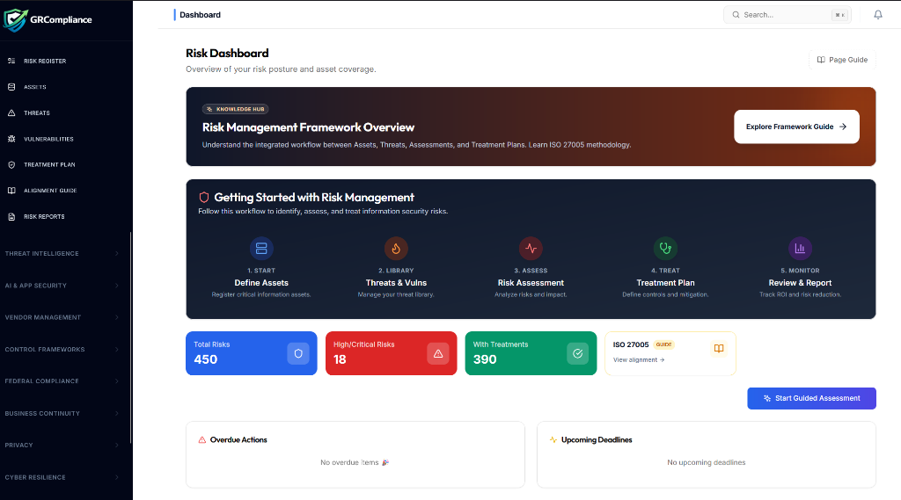
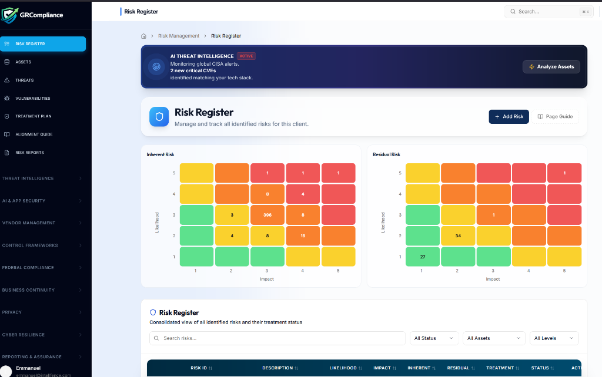

End The
Heatmap Theater.
Static risk registers are where visibility goes to die. Quantify your exposure in real-time. Move from subjective 1-5 scores to data-driven risk intelligence that actually protects your revenue.
Automated Key Risk Indicators (KRIs) Live Tracking
See threats before
they see you.
Real-time threat intelligence, automated vulnerability scanning, and AI-powered risk assessments that keep your security posture ahead of evolving threats.
Risk Assessment
Quantify and prioritize risks with AI-assisted assessments aligned to NIST, ISO 27005, and FAIR frameworks.
- Automated scoring
- Heat map visualization
- Treatment plans
Threat Intelligence
Continuous monitoring of threat landscapes with adversary emulation and IOC detection powered by global feeds.
- Real-time alerts
- MITRE ATT&CK mapping
- Threat actor profiles
Vulnerability Management
Automated scanning, prioritization, and remediation tracking across your entire attack surface.
- Continuous scanning
- CVE prioritization
- Patch tracking
SIEM & SOAR
Unified security operations with automated response playbooks and intelligent alert correlation.
- Log aggregation
- Automated response
- Incident workflows
AI-Powered Analysis
Machine learning models detect anomalies and predict attack vectors
Dark Web Monitoring
24/7 surveillance for exposed credentials and compromised data
Real-Time Orchestration
Automated threat response with customizable playbooks
The Risk
Command Portal

01. Centralized Oversight
A unified dashboard mapping the workflow between Assets, Threats, and Treatment Plans. Monitor your total risk posture with real-time counters and overdue action trackers.

02. Dynamic Heatmaps
Visualize Inherent vs. Residual risk side-by-side. Our grids aren't just for show—they are powered by AI threat intelligence that identifies new CVEs matching your specific tech stack.

03. Granular Register
Drill down into every identified risk ID. Track descriptions, impact levels, and specific mitigation treatments with high-contrast, status-driven UI indicators.
Quantified
Regsiters
Move beyond High/Medium/Low. Our platform calculates risk scores based on control coverage, asset criticality, and historical threat data.
Live Control
Linking
A risk is only managed if its controls are working. We link every risk entry to real-time evidence. If a control fails, the risk score spikes automatically.
Automated
Forecasting
Use KRIs to predict potential breaches before they happen. Our agent alerts you when risk vectors exceed your defined appetite thresholds.